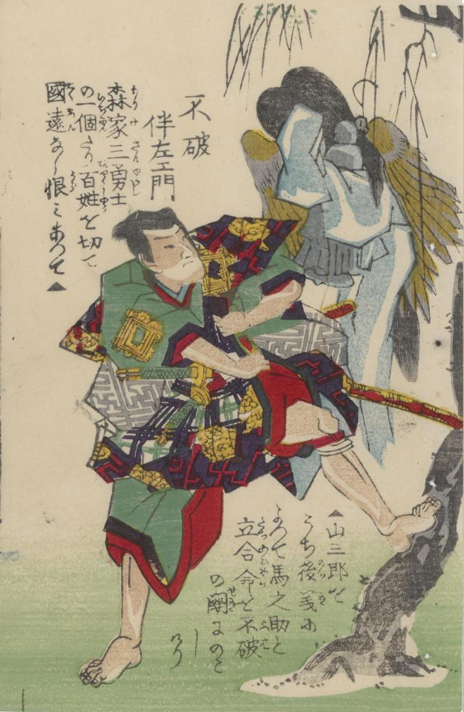

不破伴左エ門の背後に烏天狗の羽をつけて青い着物を着た幽霊が現われている。
著作者：錦朝樓芳虎／出典：親書誌：U426_nichibunken_0383：武術百勇選 : 全；ブジュツ ヒャクユウ セン : ゼン／日付：2014／資源識別子：U426_nichibunken_0383_0007_0000
Copyright (c)2010- International Research Center for Japanese Studies, Kyoto, Japan. All rights reserved.